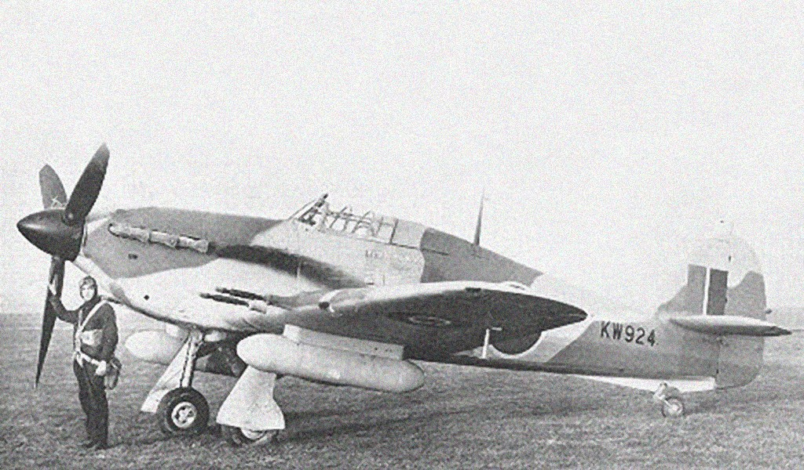
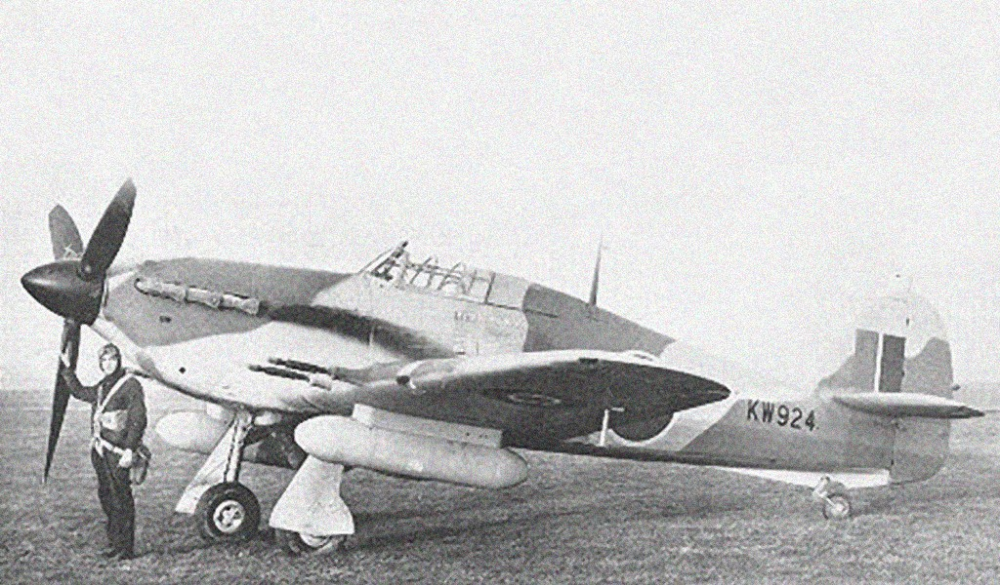

O Hawker Hurricane foi um dos mais famosos aviões e caça britânicos da Segunda Guerra Mundial. Foi o primeiro caça monoplano da Royal Air Force (RAF) e também o primeiro que podia atingir velocidade superior a 480 km/h . Projetado em 1934, por Sidney Camm e predominantemente construído pela Hawker Aircraft Ltd foi em grande medida ofuscado pelo Supermarine Spitfire, mas foi a espinha dorsal da RAF nas fases iniciais da Batalha de Inglaterra, sendo responsável por 60% das vitórias na batalha, e mais da metade dos aviões alemães abatidos durante o primeiro ano da guerra.
| Ano | 1937 |
|---|---|
| Pais de Origem | Reino Unido |
| Tripulação | 1 |
| Motor | 1 x Rolls-Royce "Merlin XX", 940kW |
O primeiro Hawker Hurricane Mk I saiu das linhas de montagem em 12 de Outubro de 1937 e, dois meses depois, já equipava algumas das esquadrões de caça do Comando de Caça da Royal Air Force (RAF). Protótipo, K5083 do Hawker Hurricane, 1935 O desenvolvimento havia sido iniciado por Sidney Camm em 1934, numa altura em que a força da RAF era composta por biplanos Hawker Fury , Hawker Demon , ou Bristol Bulldog, propôs um monoplano de asa baixa de construção cantilever, trem de aterragem retrátil, equipado com o novo motor Rolls-Royce PV-12 (mais tarde designado por Merlin), que movia uma hélice de madeira de duas pás. O projeto respondeu favoravelmente à Especificação F.5/34 emitida pelo Ministério da Aeronáutica em novembro e consequentemente foram encomendados protótipos, que deveriam ser armados com oito metralhadoras (em vez das quatro previstas no projeto). Em 6 de novembro de 1935, o protótipo, K5083 voo pela primeira vez pelas mãos do piloto de testes da Hawker. George Bulman. Tinha uma fuselagem em viga armada tipo Warren, com longarinas em aço e restantes elementos estruturais em duralumínio, parcialmente revestida de tecido impermeabilizado com dope. A estrutura da asa cantilever era formada por duas longarinas de aço com nervuras em duralumínio igualmente revestidas por tecido impermeabilizado. A partir de 1939 as asas passaram a ter revestimento em duralumínio, que permitia melhorar a velocidade de mergulho do Hurricane e aumentava a capacidade de carga da asa. No inicio da Batalha de Inglaterra existiam ainda ao serviço algumas unidades com as asas de tecido mas a permutabilidade das asas permitiu a sua rápida substituição por asas totalmente metálicas (esta alteração era feita em aproximadamente três horas de trabalho).
Os protótipos e as primeiras produções de Hurricane Mk I foram equipados com uma
hélice de passo
fixo
Watts de duas pás de madeira, que rapidamente provou ser
ineficiente. Foram feitos ensaios com uma
hélice De Havilland de passo variável
que aumentou a eficiência da aeronave nas descolagens, mas a
partir de 1939 todas
as aeronaves passaram a ser equipadas com uma hélice de velocidade constante
Rotol,
ainda a tempo do início da Batalha de Inglaterra. Os primeiros Hurricane eram equipados
com um motor
Rolls-Royce Merlin MkII ou Mk III de 1030 cv e armados com oito
metralhadoras Browning de 7.7 mm. A
versão Mk I seria produzida entre 1937 e 1939.
No final da primeira metade de 1940 os Hurricane (Mk II) passaram a ser alimentados
pelo motor
Merlin
XX, que sendo mais longo alterou o centro de gravidade da aeronave
tornando-a mais estável. Os
Hurricane
MkIIB teriam asas modificadas com suportes para
o transporte de duas bombas de 110 ou 230 Kg, mas
que
também eram frequentemente
usados para transportar tanques extra de combustível, aumentando a
autonomia
das
aeronave. Na produção seguinte os Hurricane Mk IIB receberam uma hélice mais longa
e o
armamento
foi
reforçado para 12 metralhadoras Browning de 7,7 mm.
Para uso em Africa estes Hurricanes foram tropicalizados com filtros de poeira e equipados com um um kit de sobrevivência no deserto para o piloto, que incluía uma garrafa de água atrás do cockpit (Mk IIB Trop). Na modificação seguinte, o Hurricane Mk IIC, teria asas ligeiramente modificadas e um novo armamento, quatro canhões Hispano Mk II de 20 mm. Esta modificação destinava-se a tornar o Hurricane apto para efetivamente desempenhar funções de apoio próximo e ataque, sendo por vezes referido como Hurribomber. Em 1942 alguns Hurricane (MkIID) foram modificados com blindagem adicional para o piloto e armados com dois canhões Vickers S gun de 40 mm instalados um em cada asa num pod tipo gôndola e com quinze tiros cada. Estas aeronaves apelidadas de "Flying Can Openers" operaram a partir de 1941 em operações anti-tanque. Hawker Hurricane Mk IV A ultima grande modificação foi o Hurricane Mk IV (o Mk III foi uma versão equipada com motor Packard Merlin mas abandonada), que dispunha de uma asa com suportes universais, nos quais podiam ser transportadas bombas de 110 ou 230 kg, foguetes RP-3 (Rocket Projectile 3 inch), tanques de queda, ou dois canhões Vickers S gun de 40 mm. Mantinha ainda duas metralhadoras Browning de 7.7 mm que eram usadas para apontar as armas pesadas ao alvo. Esta versão foi equipada com os mais recentes motores Merlin 24 ou 27 de 1620 cv, devidamente preparados para operar no deserto e com uma blindagem mais robusta.
O Hurricane Mk V seria a ultima versão desenvolvida, com motor Merlin 32 de 1700
cv e hélice de
quatro
pás, destinava-se a ser usado como aeronave de ataque no teatro
da Birmânia, mas apenas foram
construídos três protótipos.
Cerca de 640 Hurricane
foram construídos no Canadá, nas versões Mk X, Mk XI, Mk XII e Mk XIIA,
que
usavam motores Packard Merlin 29, de 1300cv e se distinguiam entre si pelas várias
combinações de
armamento.
Hawker Sea Hurrinane
A partir de 1941, cerca de 250
aviões Hurricane Mk I foram modificados para serem lançados por
catapultas
instaladas em navios de escolta (navios CAM) dos comboios do Atlântico. Estes
aviões
seriam
designados por Sea Hurricane Mk I e informalmente conhecidos por
Hurricat. Até 1943 um numero
próximo de
1400 Hurricane Mk I e Mk II, MkIIB e
MkIIC, seriam modificados em Sea Hurricane para operarem a
partir
de navios CAM,
mas também a partir dos porta aviões da FAA (Fleet Air Arm), nomeadamente o HMS
Furious.
Estas aeronaves viriam a desempenhar um papel importante na defesa da ilha
de Malta (Operação
Pedestal)
em agosto de 1942.
Um total de 14,583 Hurricane,
seriam produzidos de 1937 a 1944, a maioria dos quais pela Hawker
Aircraft
. Cerca de 2750 seriam produzidos pela Aircraft Company Gloster, e 300 pela
Austin Aero Company no
Reino
Unidos e a Canadá Car and Foundry em Ontário
foi a responsável pela produção dos 1400 Hurricane Mk X
canadianos.
Quando a Grã-Bretanha entrou na II Guerra Mundial, em 1939, a RAF dispunha de 497 Hawker Hurricane, que equipavam 18 esquadrões. Em maio de 1940, esquadrões de caças Hurricane foram enviados para França, para prestarem apoio as forças francesas que resistiam a invasão alemã. Durante os dias que se seguiram a sua chegada a França, até ao final da retirada de Dunquerque ( Operação Dynamo) que ocorreu entre 26 de Maio e 3 de junho de 1940, os pilotos de Hurricane reclamaram 499 vitórias e 123 prováveis (embora registos alemães apenas refiram 299 aviões da Luftwaffe abatidos e 65 seriamente danificados por aviões da RAF neste período).Porém as perdas de Hurricane foram bastante elevadas, dos 452 aviões enviados para França apenas 66 regressaram à Grã-Bretanha, tendo 178 sido abandonados nos aeródromos franceses durante a retirada das forças aliadas e os restantes abatidos em combate ou no solo. Lançamento de um Sea Hurricane de uma catapulta Em meados de Julho de 1940, quando os alemães iniciaram os bombardeamentos maciços sobre a Inglaterra, facto que viria a ficar na História como a “Batalha de Inglaterra”, a RAF dispunha de 26 esquadrões equipadas com Hurricane e um mês depois, 2.309 Hurricane equipavam 32 esquadrões (paralelamente os Supermarine Spitfire equipavam apenas 19 esquadrões). A diferença de performances entre estes dois aviões definiu a táctica da sua utilização, os Spitfire enfrentavam os caças germânicos e os Hurricane abatiam os bombardeiros.
A antiquada técnica de construção estrutural em viga armada do Hurricane veio a demonstrar uma vantagem relativamente aos mais modernos Spitife de construção monocoque. A estrutura de montagem tubular do Hurricane e o frágil revestimento em tecido da fuselagem tornavam-no bastante tolerante os tiros de canhão e metralhadoras alemãs, uma vez que permitiam que os projeteis atravessassem o estrutura do avião sem causar danos significativos na sua estrutura. Igualmente os danos eram mais facilmente reparáveis em campo que os danos na estrutura monocoque do Spitfire. O Hurricane provou também ser uma aeronave relativamente simples de voar à noite e foi fundamental na defesa noturna da Inglaterra às incursões nocturnas da Luftwaffe mas a partir do início de 1941, em larga medida estava já ultrapassado pelos mais modernos caças alemães no combate aéreo. Neste papel fora também já grandemente substituído pelo Spitfire, e passou por isso a desempenhar fundamentalmente missões de apoio aéreo e ataque ao solo, em raids aéreos noturnos sobre os aeródromos alemães em França. Finda a batalha de Inglaterra os Hurricane foram enviados para outros teatros de guerra menos exigentes tecnologicamente e com menos preponderância do combate aéreo. Um total de 2.952 Hurricane, maioritariamente Mk IIB, foram enviados para defesa da URSS durante a invasão alemã. Embora inferiores aos Bf 109E e a alguns aviões russos, desempenharam um papel importante na ampla frente Leste que se estendia de Leninegrado até aos campos petrolíferos do sul, passando por Moscovo. Durante o cerco de Malta o Hurricane foi o principal meio de defesa aérea do arquipélago até final de 1941, suportando os ataques da Regia Aeronautica até a intervenção Alemã no inicio de 1942.
 
